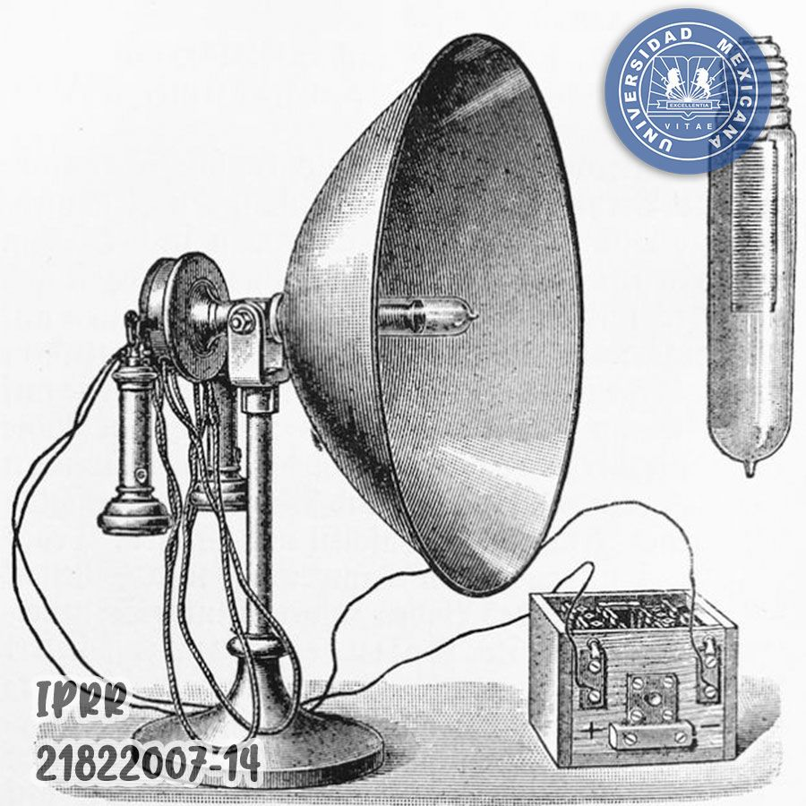

Alternating Current (AC) System
Tesla's AC system revolutionized the way electricity is generated and distributed. It allowed for the efficient transmission of electrical power over long distances, making it possible to light up entire cities.

Tesla's AC system revolutionized the way electricity is generated and distributed. It allowed for the efficient transmission of electrical power over long distances, making it possible to light up entire cities.
The Tesla Coil is a high-frequency transformer that produces high-voltage, low-current electricity. It has been used in radio technology, medical devices, and even entertainment.

Tesla's invention of the induction motor utilized electromagnetic fields to create rotational motion. This invention is widely used in household appliances, industrial machines, and electric vehicles.

Tesla made significant contributions to the development of radio technology, including the invention of the Tesla coil, which was used in early radio transmitters.
Tesla's experiments with wireless power transmission aimed to provide free energy to the world. Although his vision was not fully realized, his work laid the groundwork for modern wireless charging technologies.


| Invention | Details | |
|---|---|---|
| Description | Year | |
| Alternating Current (AC) System | Revolutionized electricity transmission and distribution | 1887 |
| Tesla Coil | 1891 | |
| Induction Motor | Created rotational motion using electromagnetic fields | 1888 |
| Radio Technology | Contributed to early radio transmitters and wireless communication | |
| Wireless Power Transmission | Experiments to transmit power without wires | 1899 |